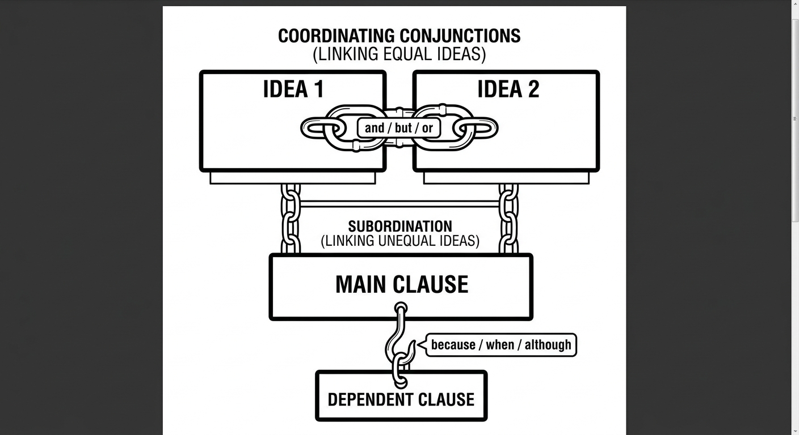
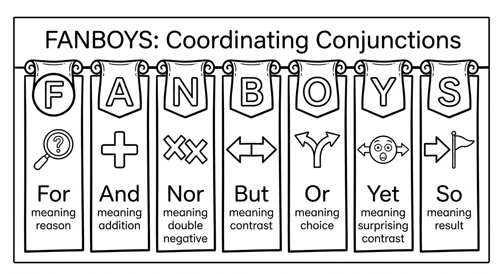
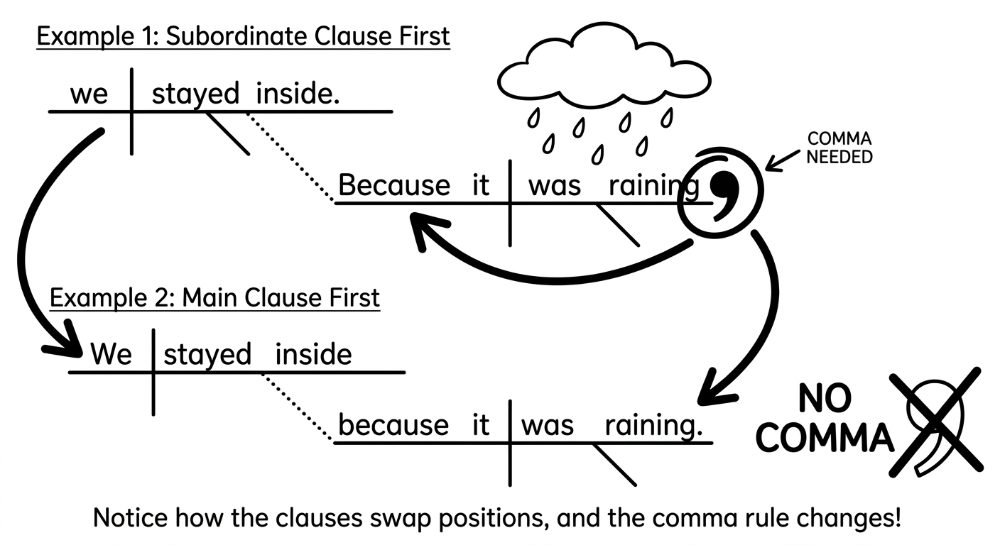
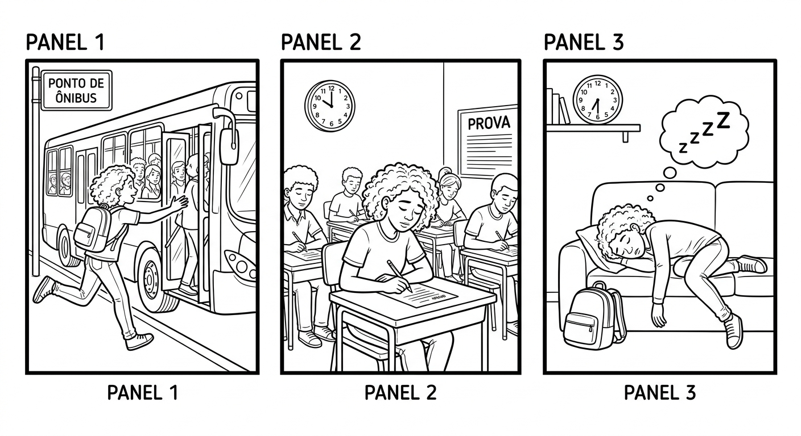
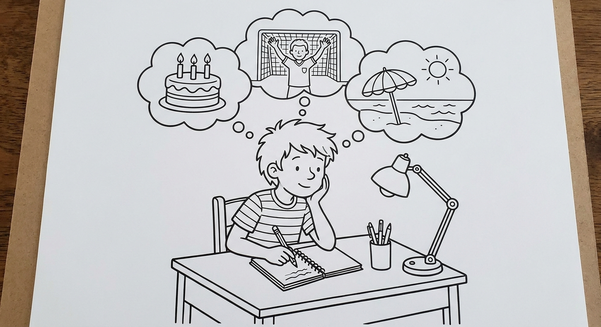

Connectors: Conjunctions
Learn how to connect ideas in English using coordinating and subordinating conjunctions. These small but powerful words help you build longer, more natural sentences and express relationships between ideas.

Coordinating Conjunctions (FANBOYS)
Coordinating conjunctions connect two equal parts of a sentence: two words, two phrases, or two independent clauses. There are seven of them, and you can remember them with the acronym FANBOYS:
| Letter | Conjunction | Meaning / Function | Significado |
|---|---|---|---|
| F | for | gives a reason (formal) | pois, porque (formal) |
| A | and | adds information | e |
| N | nor | adds a negative alternative | nem |
| B | but | shows contrast | mas |
| O | or | gives a choice / alternative | ou |
| Y | yet | shows contrast (unexpected) | mas, porém, no entanto |
| S | so | shows result / consequence | então, por isso |
When a coordinating conjunction connects two independent clauses (complete sentences), use a comma before the conjunction.
- Two clauses (use comma): I wanted to go, but it was raining.
- Two words/phrases (no comma): I like rice and beans.
Independent clause + , + FANBOYS + independent clause

| Connector | Português | Example Sentence |
|---|---|---|
| and | e | Lucas studies English and Spanish. |
| but | mas | She is tired, but she keeps studying. |
| or | ou | Do you want coffee or juice? |
| so | então, por isso | It was late, so we went home. |
| yet | mas, porém | He is young, yet he is very responsible. |
| for | pois (formal) | She stayed home, for she was not feeling well. |
| nor | nem | He doesn't like soccer, nor does he like volleyball. |
Examples: Coordinating Conjunctions in Context
Rafaela made dinner, and Gustavo washed the dishes.
Rafaela fez o jantar e Gustavo lavou a louça.
I studied hard for the test, but I didn't get a good grade.
Eu estudei bastante para a prova, mas não tirei uma nota boa.
We can go to the park, or we can stay home and watch a movie.
Podemos ir ao parque ou podemos ficar em casa e assistir um filme.
The bus was late, so Mateus walked to school.
O ônibus estava atrasado, então Mateus foi a pé para a escola.
The exercise was difficult, yet all the students finished it.
O exercício era difícil, porém todos os alunos terminaram.
Dona Lúcia closed the windows, for a storm was coming.
Dona Lúcia fechou as janelas, pois uma tempestade estava chegando.
Bruno doesn't eat meat, nor does he eat fish.
Bruno não come carne, nem come peixe.
"but" vs "yet" -- what is the difference?
- but = general contrast. "I like coffee, but I don't like tea."
- yet = contrast with something unexpected or surprising. "He never studied, yet he passed the exam." (This is surprising!)
- In Portuguese, yet is closer to "porém" or "no entanto" -- more formal and emphatic than "mas."
Suggested time: 25 minutes
L1 note: Brazilian students tend to overuse "and" and "but" because these map directly to Portuguese "e" and "mas." Encourage them to experiment with "so," "yet," and "or" to add variety. The conjunction "for" (meaning "because") is rarely used in everyday conversation; it appears mostly in formal writing. "Nor" requires subject-verb inversion ("nor does he..."), which may need extra practice.
Activity: Write the acronym FANBOYS on the board. Give students two simple sentences and ask them to connect them using different FANBOYS conjunctions, discussing how the meaning changes each time.
Fill in the blanks with the correct coordinating conjunction: and, but, or, so, yet, for, or nor.
Select the correct coordinating conjunction to complete each sentence.
I was very hungry, ___ I made a sandwich.
b) soMarcos wanted to buy a new phone, ___ he didn't have enough money.
c) butShe doesn't like horror movies, ___ does she like action movies.
a) norYou can take the bus, ___ you can walk to school.
b) orThe movie was very long, ___ it was absolutely worth watching.
c) yetSubordinating Conjunctions
Subordinating conjunctions connect a main clause (independent) to a subordinate clause (dependent). The subordinate clause cannot stand alone as a sentence.
| Conjunction | Function | Português | Example |
|---|---|---|---|
| because | reason | porque | I stayed home because I was sick. |
| when | time | quando | I was happy when I heard the news. |
| if | condition | se | If it rains, we will stay home. |
| although / though | contrast | embora, apesar de que | Although it was cold, she went for a walk. |
| while | simultaneous actions | enquanto | While I cooked, he set the table. |
| before | sequence (earlier) | antes de / antes que | Brush your teeth before you go to bed. |
| after | sequence (later) | depois de / depois que | After she finished, she went out. |
The subordinate clause can come before or after the main clause. The meaning is the same, but the punctuation changes:
- Subordinate clause first = use a comma: Because it was raining, we stayed inside.
- Main clause first = no comma needed: We stayed inside because it was raining.
Pattern:
- Subordinating conjunction + clause , + main clause.
- Main clause + subordinating conjunction + clause.

Examples: "because" (reason / motivo)
Mariana missed the class because she had a doctor's appointment.
Mariana perdeu a aula porque tinha uma consulta médica.
Because the traffic was terrible, João arrived late to work.
Porque o trânsito estava terrível, João chegou atrasado ao trabalho.
Examples: "when" (time / tempo)
I always feel happy when I listen to music.
Eu sempre me sinto feliz quando ouço música.
When the teacher arrived, everyone stopped talking.
Quando a professora chegou, todos pararam de falar.
Examples: "if" (condition / condição)
We will go to the beach if the weather is good.
Nós iremos à praia se o tempo estiver bom.
If you study every day, you will learn English faster.
Se você estudar todo dia, vai aprender inglês mais rápido.
Examples: "although / though" (contrast / contraste)
Although he was tired, Pedro finished all his homework.
Embora estivesse cansado, Pedro terminou toda a lição de casa.
The test was not easy, though most students passed.
A prova não foi fácil, embora a maioria dos alunos tenha passado.
Examples: "while" (simultaneous / simultâneo)
While Fernanda studied English, her brother played video games.
Enquanto Fernanda estudava inglês, o irmão dela jogava videogame.
I listened to a podcast while I was walking to school.
Eu ouvi um podcast enquanto caminhava para a escola.
Examples: "before / after" (sequence / sequência)
Before the class started, the students talked about the weekend.
Antes da aula começar, os alunos conversaram sobre o fim de semana.
After we finished the project, we celebrated with pizza.
Depois que terminamos o projeto, comemoramos com pizza.
Dialogue: Planning the Weekend
Each subordinating conjunction answers a specific question:
- "because" answers "Why?" (Por quê?)
- "when" answers "When?" (Quando?)
- "if" answers "Under what condition?" (Em que condição?)
- "although" answers "Despite what?" (Apesar de quê?)
- "while" answers "During what?" (Durante o quê?)
- "before / after" answers "In what order?" (Em que ordem?)
Suggested time: 30 minutes
L1 note (Portuguese interference): In Portuguese, "porque" (one word, no accent) means "because," while "por que" (two words) is used in questions. In English, there is only one form: "because." Students sometimes write "becouse" or "becuse" -- remind them of the correct spelling. Also, Portuguese uses the subjunctive after "embora" (although), but English does not require any special verb form after "although."
Activity: Read the dialogue aloud with a student volunteer. Then ask pairs to identify every conjunction used in the dialogue and classify each one as coordinating or subordinating.
Fill in the blanks with the correct subordinating conjunction: because, when, if, although, while, before, or after.
Combine each pair of sentences into one sentence using the conjunction given in parentheses. Remember the comma rule!
It was raining. / She walked to school. (Use "although")
Although it was raining, she walked to school. / She walked to school although it was raining.I was studying. / My brother was watching TV. (Use "while")
While I was studying, my brother was watching TV. / I was studying while my brother was watching TV.Clara did not go to the party. / She was feeling sick. (Use "because")
Clara did not go to the party because she was feeling sick. / Because she was feeling sick, Clara did not go to the party.You finish your homework. / You can play outside. (Use "after")
After you finish your homework, you can play outside. / You can play outside after you finish your homework.We eat dinner. / We usually go for a walk. (Use "before")
Before we eat dinner, we usually go for a walk. / We usually go for a walk before we eat dinner.You practice every day. / You will improve your pronunciation. (Use "if")
If you practice every day, you will improve your pronunciation. / You will improve your pronunciation if you practice every day.Daniela arrived at the cinema. / The movie had already started. (Use "when")
When Daniela arrived at the cinema, the movie had already started. / The movie had already started when Daniela arrived at the cinema.He is only fifteen years old. / He speaks three languages. (Use "although")
Although he is only fifteen years old, he speaks three languages. / He speaks three languages although he is only fifteen years old.Reading: Ana's Busy Day

Ana woke up late on Monday because her alarm didn't go off. She jumped out of bed and quickly got dressed, but she couldn't find her school bag. After she looked everywhere, she finally found it under her bed.
She ran to the bus stop, yet she arrived too late -- the bus had already left. Because there was no other bus for thirty minutes, she decided to walk to school. While she was walking, it started to rain. She didn't have an umbrella, so she got completely wet.
When Ana finally arrived at school, she was twenty minutes late. Although the teacher was strict, she was understanding that day. "You can sit down and dry off," the teacher said kindly. Ana felt grateful because the teacher didn't get angry.
Before the math class started, Ana realized she had forgotten her calculator at home. She asked her friend Caio if she could borrow his. Caio said yes, so Ana was able to do the exercises. While they worked on the problems together, Ana felt much better.
After school, Ana's mother picked her up in the car because it was still raining. On the way home, Ana told her mother about the terrible morning. Her mother laughed and said, "Everyone has bad days, but they always get better!" Although Ana had a rough start, she learned something important: if you stay positive, and you have good friends, even the worst day can turn out okay.
Pre-reading activity: Ask students: "Have you ever had a day when everything went wrong? What happened?" Let a few students share brief stories to activate relevant vocabulary.
Reading strategy: Have students read the text once for general understanding, then read it again and circle or underline every conjunction they find (both coordinating and subordinating). They should be able to find at least 20 connectors in the text.
Post-reading discussion: Ask students to identify which connectors are coordinating and which are subordinating. This reinforces the lesson content through the reading context.
Read each statement. Write True or False based on the reading text.
Ana woke up late because she stayed up all night.
False -- She woke up late because her alarm didn't go off.Ana walked to school because she missed the bus.
True -- The bus had already left, so she walked.The teacher was angry when Ana arrived late.
False -- Although the teacher was strict, she was understanding that day.Ana borrowed a calculator from her friend Caio.
True -- She asked Caio if she could borrow his calculator, and he said yes.Ana walked home after school because the rain had stopped.
False -- Her mother picked her up in the car because it was still raining.Answer the questions in complete sentences based on the text. Try to use a conjunction in each answer.
Why did Ana get wet on the way to school?
Ana got wet because it started to rain while she was walking to school, and she didn't have an umbrella.What did Ana forget at home, and how did she solve the problem?
Ana forgot her calculator at home, so she asked her friend Caio if she could borrow his. He said yes, so she was able to do the exercises.How did the teacher react when Ana arrived late? Why was this surprising?
Although the teacher was strict, she was understanding that day. She told Ana to sit down and dry off. This was surprising because the teacher was usually strict.What lesson did Ana learn from her bad day?
Ana learned that if you stay positive and you have good friends, even the worst day can turn out okay.Writing: A Memorable Day

Write a paragraph (8-12 sentences) about a memorable day in your life. It can be a happy day, a funny day, a difficult day, or a surprising day. Use at least 6 different connectors from this chapter (coordinating and subordinating conjunctions). Underline each connector you use.
Before you start writing, make a quick plan:
- What happened? (Tell the main events)
- Why was it memorable? (Use "because")
- What happened first / next / last? (Use "before," "after," "when")
- Was anything unexpected? (Use "but," "yet," "although")
- What were the choices or consequences? (Use "or," "so," "if")
Try to use connectors naturally -- don't force them into every sentence. Your writing should flow like a real story.
My Memorable Day
Use the sentence starters below to help you begin, or write freely:
I will never forget the day when ___. It was memorable because ___. Before ___, I ___. Although ___, I ___.
Connectors checklist: After writing, check which connectors you used. Did you use at least 6 different ones?
| Connector | Used? |
|---|---|
| and | |
| but | |
| or | |
| so | |
| yet | |
| because | |
| when | |
| if | |
| although | |
| while | |
| before | |
| after |
Suggested time: 20 minutes for writing + 10 minutes for peer review
Activity: After students finish writing, have them exchange paragraphs with a partner. The partner should: (1) circle all the connectors used, (2) check if at least 6 different connectors are present, (3) check the comma rule for subordinating conjunctions. Then students can revise their writing based on their partner's feedback.
Extension: Ask volunteers to read their paragraphs aloud. The rest of the class listens and raises a hand each time they hear a connector. This creates an engaging listening activity while reinforcing the lesson.
Chapter 8 - Answer Key
Exercise 1: Complete with a Coordinating Conjunction
Exercise 2: Choose the Correct Conjunction
Exercise 3: Complete with a Subordinating Conjunction
Exercise 4: Combine the Sentences
Accept either clause order. When the subordinate clause comes first, a comma is required.
Exercise 5: True or False
Exercise 6: Answer the Questions
Accept answers that convey the same meaning using different words. Encourage students to use connectors in their answers.